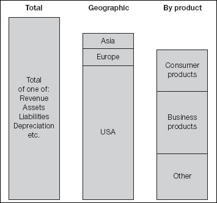
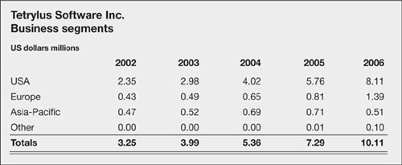

Financial statements revisited
In case you forgot, let me remind you that the previous three chapters reviewed the profit and loss account, the balance sheet and the cash flow statement. When we were discussing the balance sheet we also looked at appropriation of income and changes in shareholders’ equity. Bear with me while we run through the final couple: segment reporting and value added statements.
‘All the news that’s fit to print.’
—Adolph S. Ochs
(Former motto of New York Times)
Segment reporting
Major regulatory authorities require disclosure about financial results by region and industry – known in an off-putting way as segments. Segment reporting provides users of the financial statements with an idea of how, in the past at least, the company has allocated resources and earned profits.
|
The segment report – what it is
For financial statements, segments are the highest level of organizational units that report product and geographical information; that is, they are usually directly accountable to the CEO and board of directors. The basic principle is that only segments accounting for 10% or more of total revenues, assets or net profits must be disclosed, provided that at least 75% of consolidated revenue is explained through segment disclosures. Of course, a company operating almost wholly within one area (geographic or industry) may have no segments to report – see Safeway, above, for example. Segment reports contain an extract from the profit and loss account and balance sheet with some supplemental information, as noted next.
Segments may not sum to 100% of the total

The segment report – what it shows
International accounting standards require segment reporting by both product and service lines and by geographic lines. One basis will be defined as primary, the other as secondary. The following must be disclosed:
For primary and secondary segments:
revenue, with external and inter-segment revenues shown separately
book value of the segment’s assets
cost of acquisition of fixed assets
the basis of inter-segment pricing.
In addition, for the primary segment only:
net operating profit or loss before interest and taxes
book value of the segment’s liabilities
depreciation and amortization
non-cash expenses other than depreciation
the share of profit or loss of equity and joint venture investments.
An extract from a segment report is shown in Fig. 17.1. Given that these figures are a subset of the financial statements already discussed, I do not think that you need me to elaborate on them here, but they are analysed extensively in Chapter 18.
Fig 17.1. Segments exposed
The segment report – what it means
The figures in a segment report may not sum to the totals in the main financial statements, because small segments do not have to be reported. Nevertheless, segment reports are useful sources of competitive information when you are assessing your rivals. It shows you where and how they are doing business. Apply the same tests to these figures as you would to the main statements to see which regions and lines are most and least profitable, and so on. As for your own segments, aside from applying the same analysis, you should also be asking which ones are missing – where could you be doing business but are not?
Segment report – looking ahead
Given that figures by segment are merely extracts from the main financials, forecasting and projecting your own is straightforward. You should have the information to hand already. No doubt you have already analysed, forecast, and projected individually any segments that account for 10% or more of your business. Have you not?